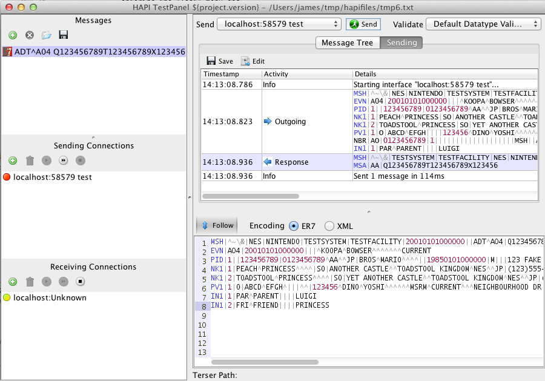

Installing HAPI TestPanel
Using WebStart
The easiest way to get started is to install TestPanel using Java WebStart . WebStart is a Java technology that ensures you are always running the newest version of TestPanel.
Once you have started the application using WebStart, you may wish to create a desktop shortcut, for easier startup. To do this (the following instructions work on Windows, OSX and most Linux distros):
- Open a command prompt/terminal window
- Enter the following command:
javaws -viewer - Right click on HAPI TestPanel, and choose Install Shortcuts
- Save the shortcut to the desktop
- Under Windows or OSX, this shortcut may now be dragged to the dock/taskbar
Downloading
Alternately, application bundles are available for Windows, Mac/OSX, and Linux. To access these, see Downloads
TestPanel does not require an installer. The executable/app bundle may be run from anywhere.
Getting Started
Once the application has started, populate it with test data by entering the "Test" menu and clicking "Populate TestPanel with Sample Message and Connections".
This creates a receiving connection (a connection which receives messages) on a randomly assigned port. It also creates a sending connection (a connection which sends messages) to that same port, so that you can send a message to yourself. It then creates a sample message for you to send.
Sending a message to yourself

|
First, choose the receiving connection by clicking on it's name (near the bottom left of the window). When the settings dialog opens, click "start". |
|  | Then, choose the message to send by clicking on the message in the message list (near the top left of the window). Now, click send. |
This help document is not yet complete. Want to help finish it? Get in touch with James Agnew.